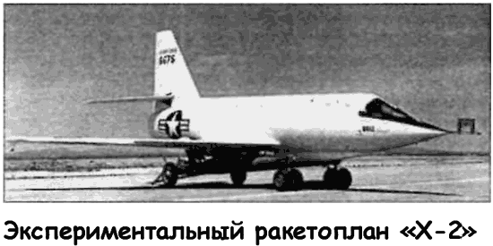
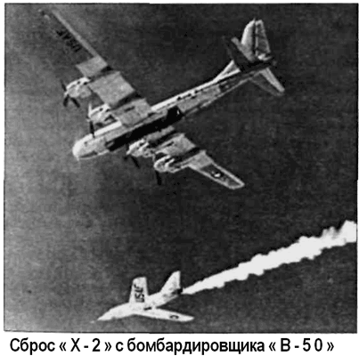

Экспериментальный ракетоплан «Х-2»
Проведя первую серию испытаний ракетопланов «Х-1», фирма «Белл» совместно с НАКА и ВВС начали проектирование нового ракетного самолета «Икс-2» («Х-2») для исследований аэро и термодинамических явлений на скорости в 3 Маха. Предполагалось, что постепенно, по мере модернизации, «Х-2» сможет достигнуть высоты в 60 километров.
Первый опытный образец «Х-2» был построен в 1952 году. Он представлял собой моноплан классической схемы (длина — 13,4 метра, высота — 4,13 метра, взлетная масса — 13 000 килограммов) с низкорасположенным стреловидным крылом (размах — 9,76 метра, угол стреловидности — 40°), имеющим острую переднюю кромку.

Крыло оснащено носовыми щитками, расположенными приблизительно на 2/5 длины передней кромки, а также обычными элеронами, снабженными триммерами. Стабилизатор — стреловидный, управляемый, а киль — прямой, с рулем направления.
Фюзеляж в центральной части имел форму, близкую к цилиндрической, а передняя и хвостовая части — конусообразную. На верхней и нижней поверхностях фюзеляжа находились два больших продольных обтекателя, которые закрывали проводку и оборудование системы управления, а также выпускаемую во время приземления лыжу. Крыло, оперение и фюзеляж были выполнены из нержавеющей стали.
Предназначение ракетоплана для полетов на больших скоростях и высотах потребовало разработки безотказного и безопасного способа катапультирования пилота в случае аварии.
В своем выборе конструкторы остановились на варианте отделения всей кабины от самолета. Кабина имела теплоизоляционное покрытие и стационарное переднее остекление, состоящее из двух стекол. Стекла не только сохраняли свои свойства до температуры 540 °C, но и поглощали инфракрасные лучи.
На «Х-2» использовался восьмикамерный ракетный двигатель «XLR-25CW» фирмы «Кертисс-Райт» («CurtissWright») с максимальной тягой 7250 килограммов. Двигатель был оснащен насосами для подачи топлива (этиловый спирт и жидкий кислород), а также оборудованием для запуска, выключения и регулирования тяги во время полета. Емкость топливных баков обеспечивала работу двигателя в течении 2,3–6 минут.
Сначала, как и заведено, в июне 1952 года было выполнено несколько планирующих полетов «Х-2» со специально приспособленного для этой цели бомбардировщика «В-50» и облет с работающим двигателем. Однако вторая попытка полета с запуском двигателя привела к катастрофе. 12 мая 1953 года во время заправки топливных баков опытного ракетоплана в воздухе, когда «Х-2» находился еще в бомбоотсеке носителя, произошел взрыв, самолет вспыхнул и сгорел в воздухе. Погибли пилот Скип Зиглер и два члена экипажа «В-50», подготавливавшие «Х-2» к самостоятельному полету.
Второй экземпляр ракетоплана построили лишь в 1955 году, а его облет с работающим двигателем состоялся в ноябре.

Позже, 25 июля 1956 года, пилот Айвен Кинчело на «Х-2» достиг рекордной скорости в горизонтальном полете — 3360 км/ч, а 7 сентября 1956 года — рекордной высоты в 38 430 метров.
Второй опытный образец постигла участь первого. Всего лишь через 20 дней после рекордного полета произошла катастрофа, а пилот Милбурн Апт погиб. Причины катастрофы выяснить так и не удалось.